Terrenos en venta en Huánuco
Hay 24 anuncios de terrenos, lotes, chacras y casas en la región Huánuco. El precio mediano publicado es S/ 60,500, con anuncios desde S/ 110 hasta S/ 8,500,000. Los tamaños van de 140 m² a 1 ha (mediana 305 m²). 7 mencionan título o partida en su descripción (según el vendedor; no verificado).
Ver en el mapa y filtrar Cómo comprar seguro
Anuncios
 Se vende terreno en cayhuayna x el colegio juan Velasco
Se vende terreno en cayhuayna x el colegio juan Velasco
S/ 450 · Huánuco, HU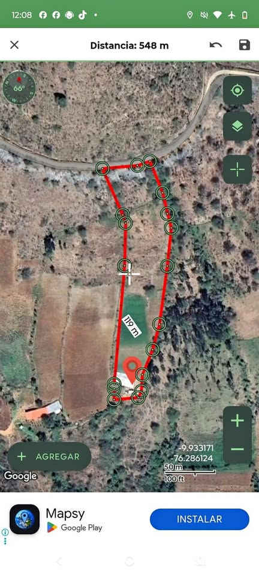
Terreno de una hectárea
S/ 200,000 · 1 ha · Huánuco, HU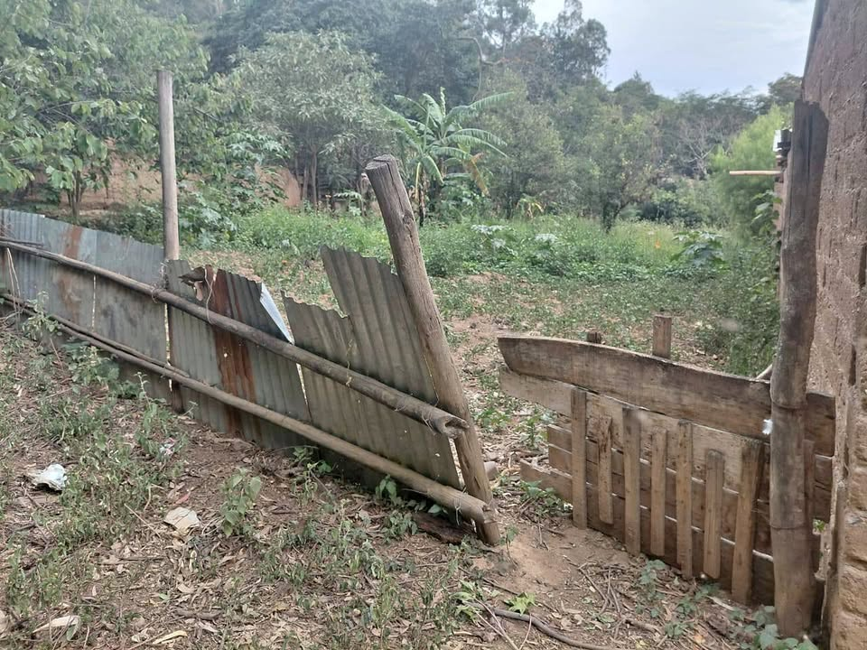
SE REMATA UN TERRENO DE 300MT EN MATIBAMBA
S/ 125,000 · 300 m² · Amarilis, HU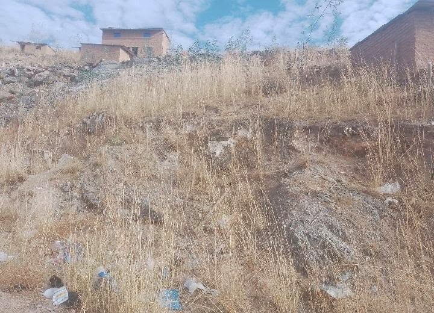
Terreno
S/ 13,000 · Huánuco, HU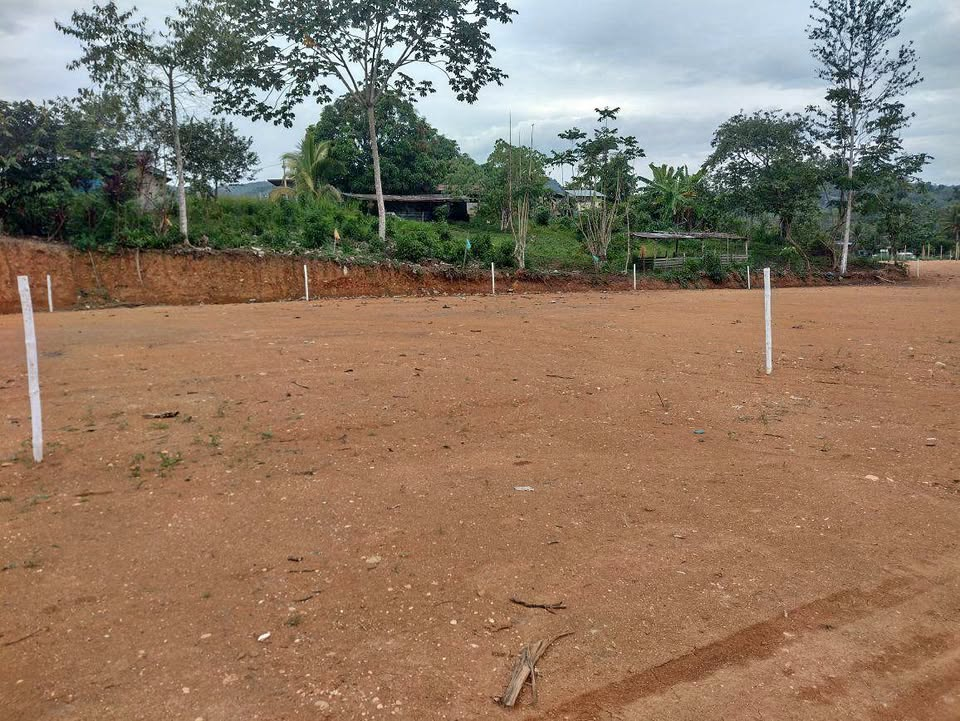
Terreno
S/ 25,000 · 160 m² · Santa Rosa (El Dorado) Remato Terreno en Vichaycoto 310m2 amplio a 1 cuadra de pista
Remato Terreno en Vichaycoto 310m2 amplio a 1 cuadra de pista
S/ 150,000 · 310 m² · Huánuco, HU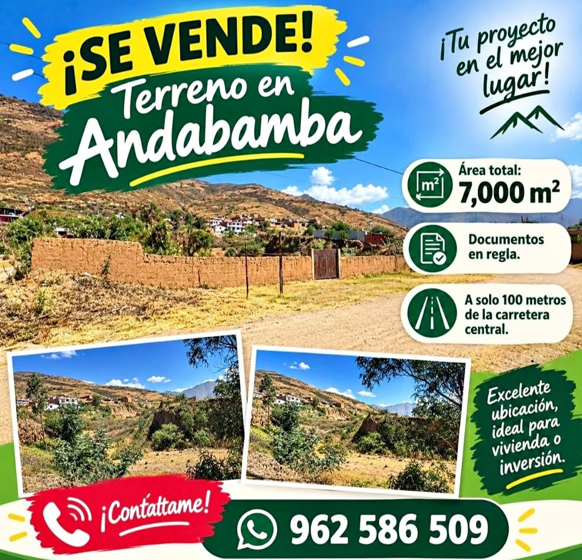
SE VENDE TERRENO EN ANDABAMBA!!!
S/ 1,111,111 · 0,7 ha · Huánuco, HU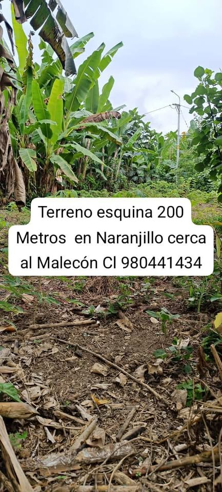
Terreno Esquina Cerca al Malecón de Naranjillo
S/ 60,000 · 204 m² · Awajún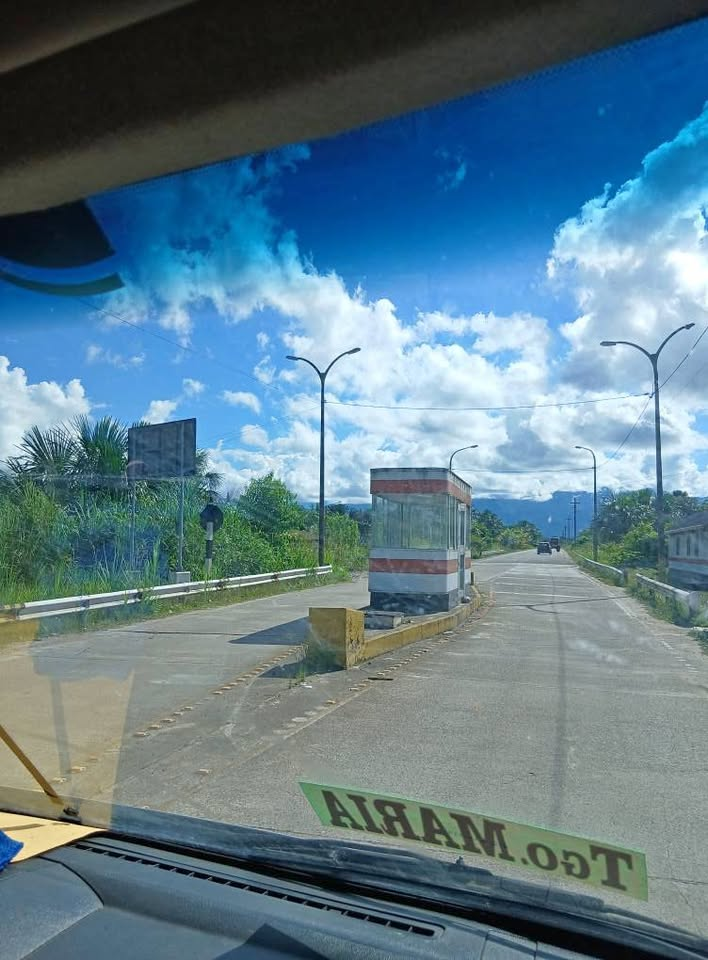
terreno
S/ 150,000 · Mariano Dámaso Beraún, HU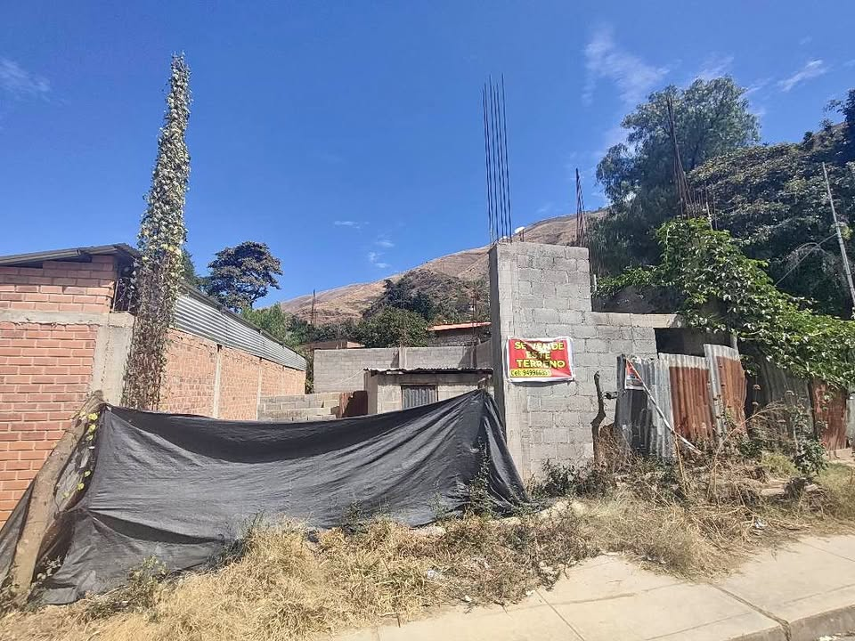
En venta terreno de 140 metros cuadrados
S/ 180,000 · 140 m² · Conchamarca, HU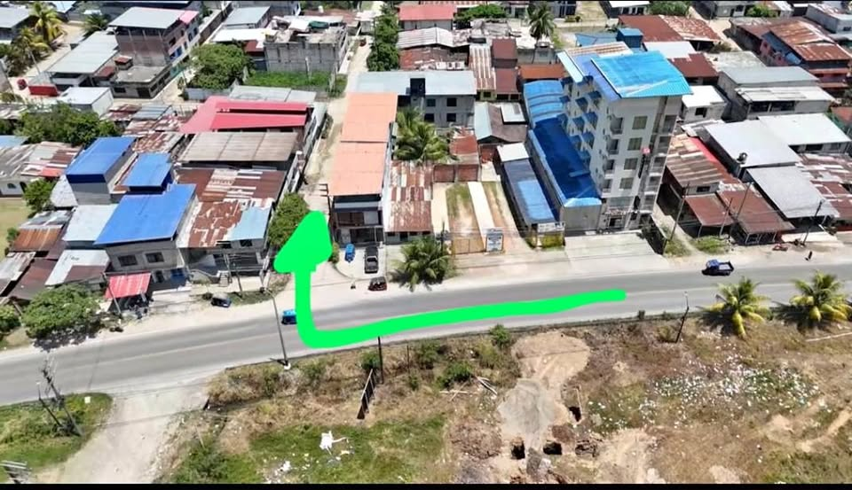
TERRENO DE 625(12.5×50) M2 EN TINGO MARIA- AFILADOR, A 3 MIN UNAS.
S/ 345,000 · 552 m² · Rupa-Rupa, HU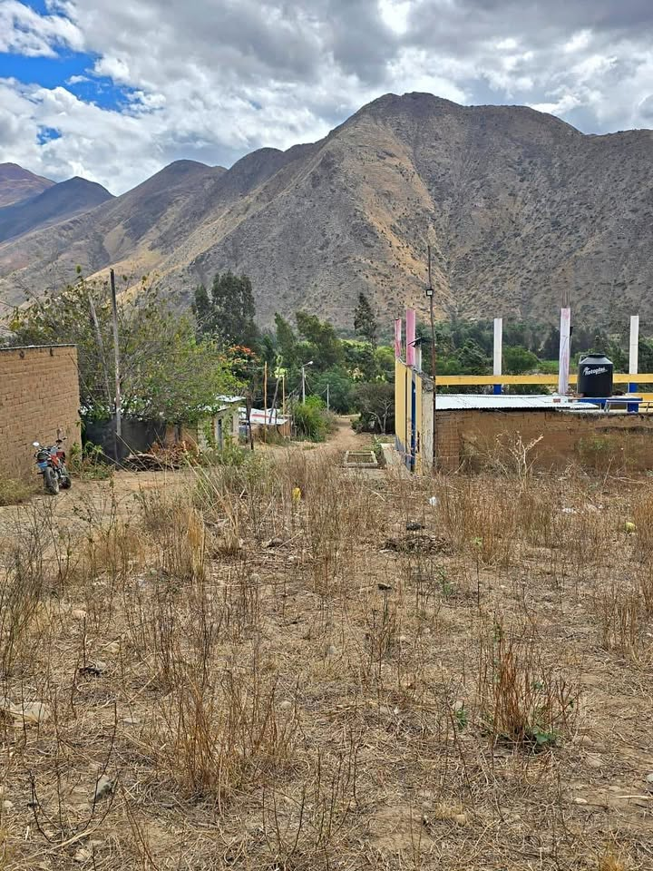
Venta de terreno
S/ 33,000 · Huánuco, HU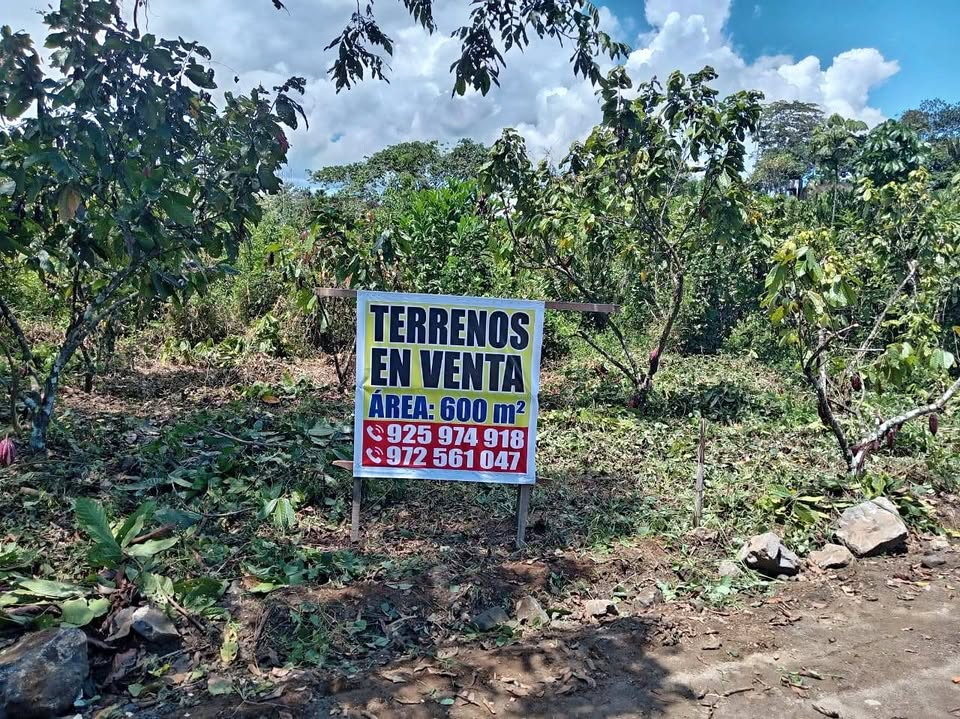
Venta de terreno a 25 min de tingo maría
S/ 40,000 · Luyando, HU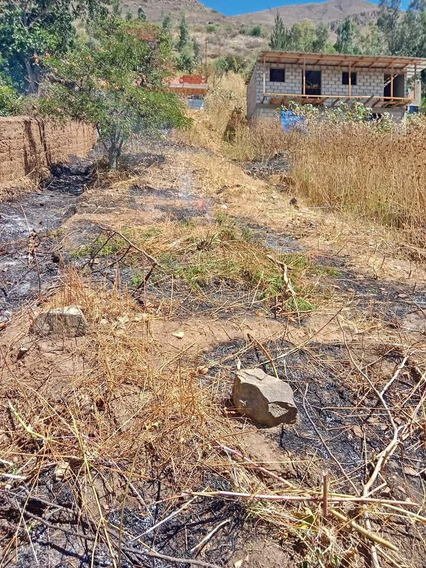
Se vende terreno
S/ 60,000 · 300 m² · Mariano Dámaso Beraún, HU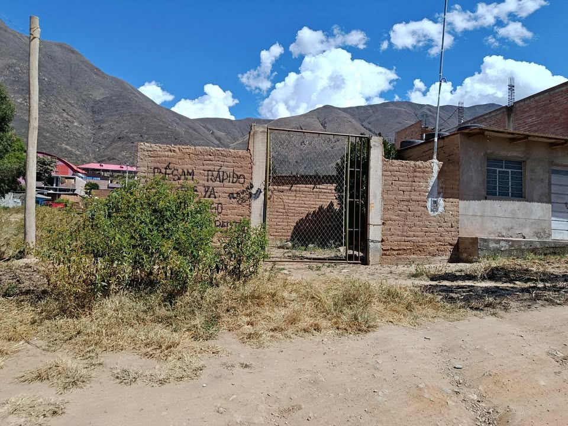
Se+vende+comunicarse+al+número[dato oculto]
S/ 110 · Huánuco, HU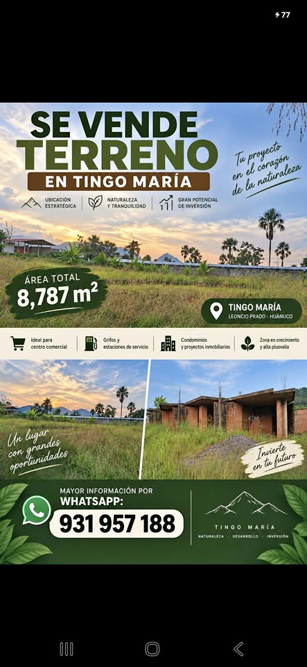
Ideal para super mercados, viviendas, grifos, colegio,etc
S/ 8,500,000 · Rupa-Rupa, HU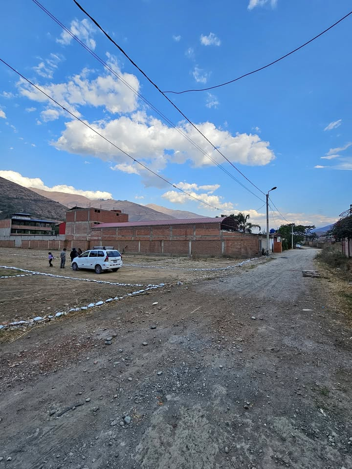
𝗧𝗘𝗥𝗥𝗘𝗡𝗢 𝗜𝗡𝗗𝗘𝗣𝗘𝗡𝗗𝗜𝗭𝗔𝗗𝗢 𝗘𝗡 𝗛𝗨𝗔́𝗡𝗨𝗖𝗢 - 𝗔𝗡𝗗𝗔𝗕𝗔𝗠𝗕𝗔
S/ 61,000 · 400 m² · Huánuco, HU- Sin fotoSe vende terreno cerca a la pista naranjillo
S/ 40,000 · 179 m² · Awajún - Sin fotoEn venta un terreno en el valle de azpuzana sector centro poblado consuelo
S/ 15,000 · 1 ha · Pucayacu - Sin fotoSe vende terreno por pichipampa alta, para mas informacion comuniquese al [dato oculto]
S/ 75,000 · Huánuco, HU - Sin fotoTerreno de 1700m²
S/ 270,000 · 1,700 m² · Santa María del Valle, HU - Sin fotoSe vende terreno de 473 metros cuadrados, documentos por derechos y acciones registrado en
S/ 185,000 · 473 m² · Amarilis, HU - Sin fotoSe vende terreno en Supte
S/ 46,000 · 160 m² · Castillo Grande, HU - Sin fotoVenta de terreno villa hermosa 9x25 interesado llamar al [dato oculto] o al [dato oculto]
S/ 40,000 · 225 m² · Rupa-Rupa, HU
Búsquedas relacionadas
Preguntas frecuentes
¿Cómo verifico en SUNARP un terreno en Huánuco?
Pide al vendedor el número de partida registral y consúltalo gratis en Conoce Aquí de SUNARP. Luego solicita la copia literal o el certificado registral para ver quién es el dueño y si hay cargas o gravámenes. Más pasos en nuestra guía Compra segura.
¿Los datos de los anuncios están verificados?
No. Precio, tamaño, ubicación y situación legal los escribe cada vendedor. CompraTerrenos.pe no los verifica: confirma todo antes de pagar.
¿Qué diferencia hay entre posesión y propiedad?
Una constancia o certificado de posesión no es un título de propiedad inscrito. Para ser propietario frente a terceros, el título debe estar inscrito en Registros Públicos. Ver Compra segura.
¿Puedo comprar desde el extranjero?
Sí, en general mediante un poder por escritura pública otorgado en el consulado. Revisa Comprar desde el extranjero (información general, no es asesoría legal).
Datos de anuncios públicos actualizados el 14 de octubre de 2026. La información la publica cada vendedor; CompraTerrenos.pe no la verifica.